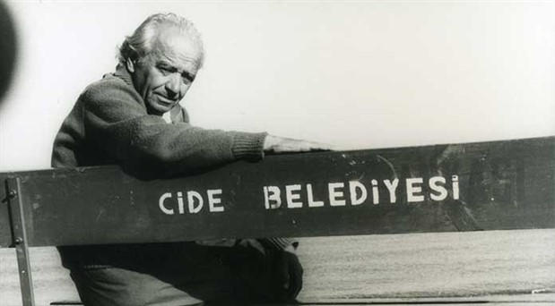

Cide Tanıtım Web Sitesine Hoş Geldiniz
Cide doğduğum eşsiz benzersiz memleket…
Ne iyi etmiş de anam beni bu cana yakın memlekette doğurmuş!
Rıfat Ilgaz
Tarihi
Anadolu’nun çoğu yöresinde olduğu gibi Cide’nin tarihi de insanlık tarihi kadar eskidir. Homeros yaklaşık 2800 yıl önce yazdığı İlyada’da Cide’den şöyle söz eder. “Yüksek kültürlü Henetlerin yurdundan geçtik; Kiteros’tanAycelos’tan”.
Aycelos bugünkü Cide’dir. Kiteros’ta doğal bir liman olan ve günümüzde Gideros adıyla bilinen eski bir yerleşim merkezidir. Cide 1213 yılında Anadolu Selçukluların, 1460‘da Fatih Sultan Mehmet ‘in Kastamonu’yu almasıyla da Osmanlı İmparatorluğunun egemenliğine geçmiştir.
Cide, tarih boyunca ipek yolu üzerinde önemli bir liman olma özelliğini sürdürmüş, Osmanlı İmparatorluğu döneminde de “Karaağaç İskelesi “ adıyla Rus çarlığından getirilen tuzun dağıtım merkezi ve imparatorluğa mal sevk edilen bir liman olarak önem kazanmıştır. 1868 yılında ilçe olmuştur.